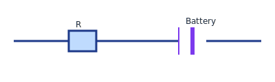

Fundamentals of Electronics
Introductory concepts: diodes, transistors, logic gates and a basic amplifier idea.
Diodes & Transistors (qualitative)
Diode: allows current one way; forward/reverse bias. Transistor: basic amplifier/switch; NPN/PNP operation qualitatively explained.
Simple circuit diagram
Figure: Series circuit with a resistor and battery.
Practice
- Explain diode forward/reverse bias behavior.
- Sketch how a single-transistor amplifier changes small input voltage to larger output swing (qualitative).
Solutions (brief)
- Diode conducts when forward biased (barrier lowered) and blocks when reverse biased (barrier high); avalanche breakdown if voltage too large.
- Transistor in common-emitter amplifies: small base-emitter voltage changes large collector current, producing larger voltage swing across a load resistor.
Practice
- Explain why a diode conducts in forward bias but blocks in reverse bias.